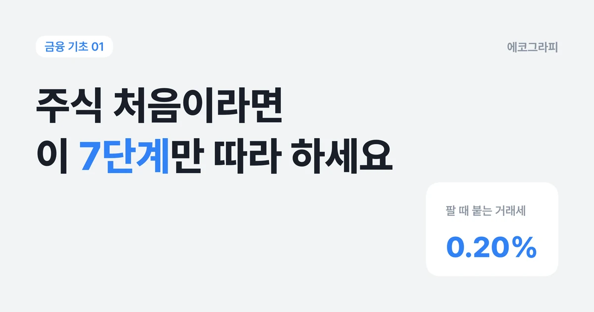
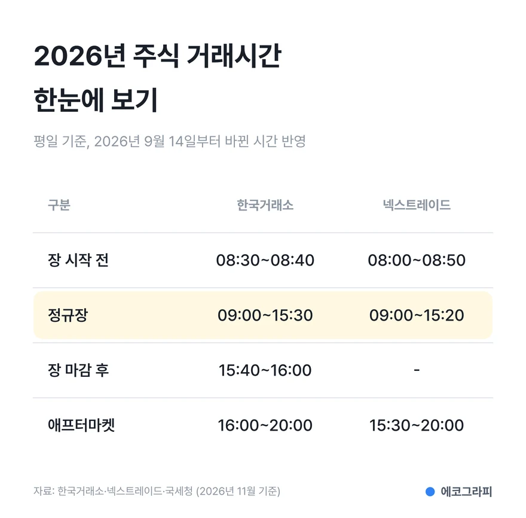
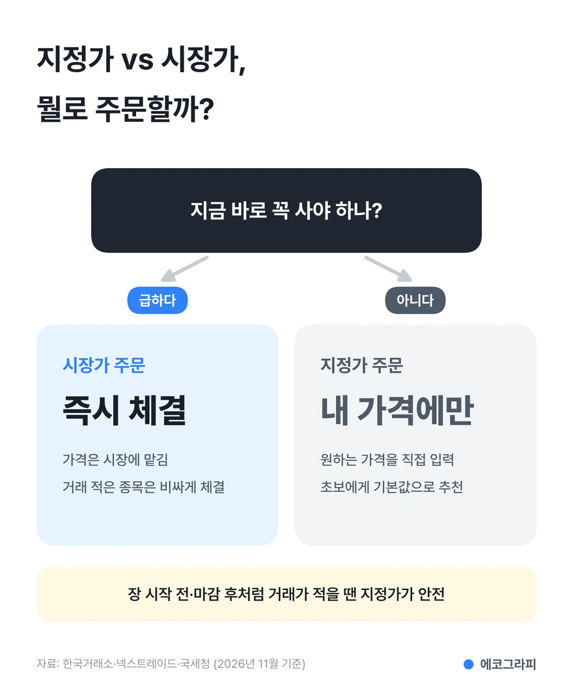
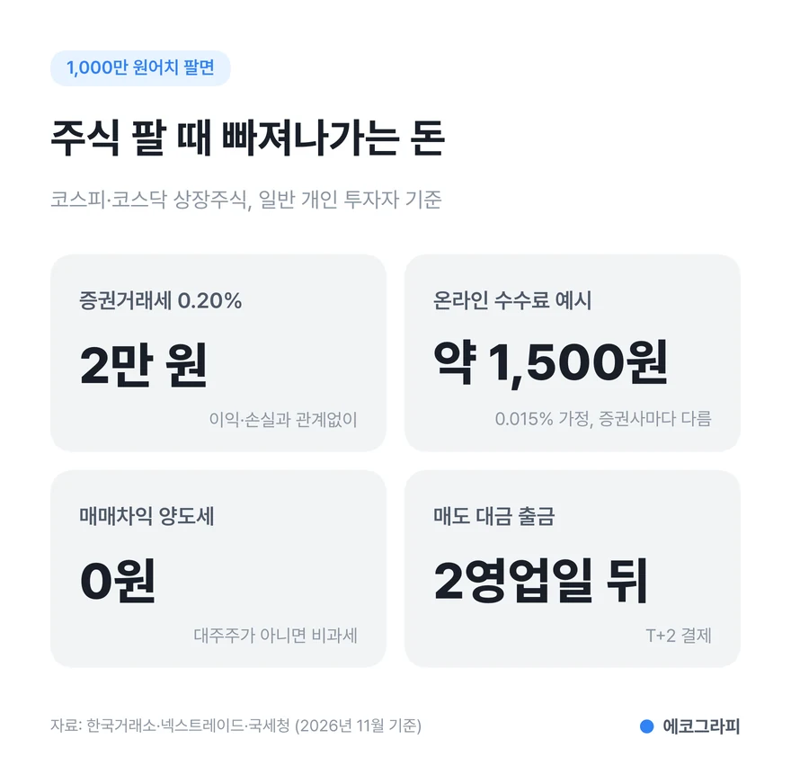
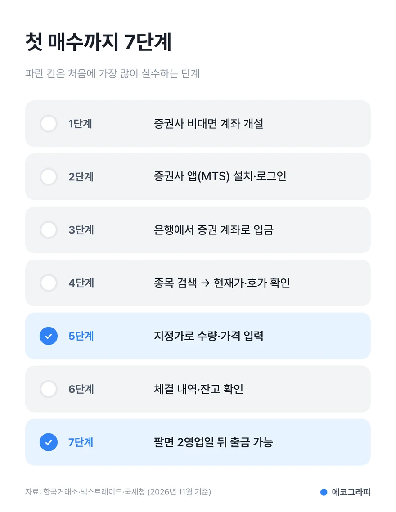

주식은 은행 통장이 아니라 증권 계좌에서 사고팝니다. 요즘은 지점에 가지 않고 증권사 앱에서 비대면 개설이 가능해요. 신분증과 본인 명의 은행 계좌만 있으면 됩니다.
짧은 기간에 여러 금융사에서 계좌를 연달아 만들면 대포통장 방지 규정 때문에 개설이 제한될 수 있어요. 한 곳을 정해서 시작하세요.
예전엔 "주식은 3시 30분에 끝난다"였지만 지금은 다릅니다. 2025년 3월 대체거래소 넥스트레이드(NXT)가 문을 열었고, 2026년 9월 14일부터는 한국거래소(KRX)도 오후 4시~8시 애프터마켓을 운영해요. 대신 예전의 '시간외 단일가매매'는 없어졌습니다.

초보라면 정규장(09:00~15:30)에 거래하세요. 장 시작 전·마감 후에는 사고파는 사람이 적어서 가격이 크게 튈 수 있어요. 수능일처럼 거래시간이 임시로 바뀌는 날도 있으니 증권사 공지를 확인하세요.
종목을 검색하면 '호가창'이 보입니다. 위쪽은 팔려는 가격(매도 호가), 아래쪽은 사려는 가격(매수 호가)이에요. 주문은 크게 두 가지입니다.

첫 주문 팁: 1주만 지정가로 사 보세요. 체결 내역과 잔고가 어떻게 보이는지 한 번 경험하면 다음부터는 훨씬 편합니다.
살 때는 수수료만 내지만, 팔 때는 증권거래세가 붙습니다. 2026년부터 세율이 다시 올라 코스피·코스닥 모두 매도금액의 0.20%예요(코스피는 거래세 0.05% + 농어촌특별세 0.15%). 손해를 보고 팔아도 똑같이 냅니다.

| 항목 | 얼마나 | 언제 |
|---|---|---|
| 매매 수수료 | 증권사별 (온라인 0.01%대) | 살 때·팔 때 |
| 증권거래세 | 매도금액의 0.20% | 팔 때 |
| 배당소득세 | 배당금의 15.4% | 배당 받을 때 |
| 매매차익 양도세 | 일반 투자자 0원 | 대주주만 해당 |
또 하나, 주식을 팔아도 돈이 바로 출금되지 않아요. 국내 주식은 2영업일 뒤(T+2)에 결제가 끝나서, 월요일에 팔면 수요일에 출금할 수 있습니다. 대신 판 돈으로 다른 주식을 사는 건 바로 됩니다.
ETF는 증권거래세가 없어요. ETF 기초는 금융 기초 글에서 이어서 정리했습니다.

1주 가격만 있으면 됩니다. 몇천 원짜리 주식도 있어요. 증권사에 따라 소수점(0.1주 단위) 거래도 지원합니다.
아니요. 국내 주식은 평일에만 거래돼요. 주말에 넣은 주문은 다음 거래일에 처리되거나 취소됩니다.
증권사 앱이 더 유리한 가격을 자동으로 찾아 주는 경우가 많아요(최선집행). 처음엔 기본 설정 그대로 쓰면 됩니다.
네. 증권거래세는 이익이 아니라 매도금액에 붙는 세금이라 손실이어도 냅니다.
한 종목을 일정 금액 이상 보유한 사람이에요. 일반적인 소액 투자자는 해당하지 않습니다.
※ 2026년 11월 기준으로 정리한 글입니다. 세율·제도는 바뀔 수 있으니 거래 전 증권사·국세청 안내를 한 번 더 확인하세요. 특정 종목·상품의 매수·매도 권유가 아닙니다.